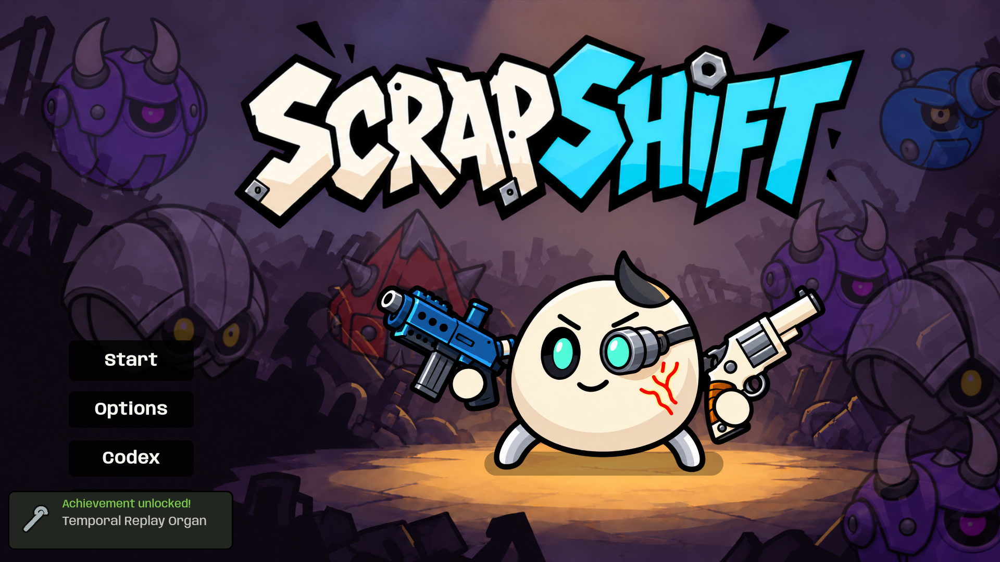
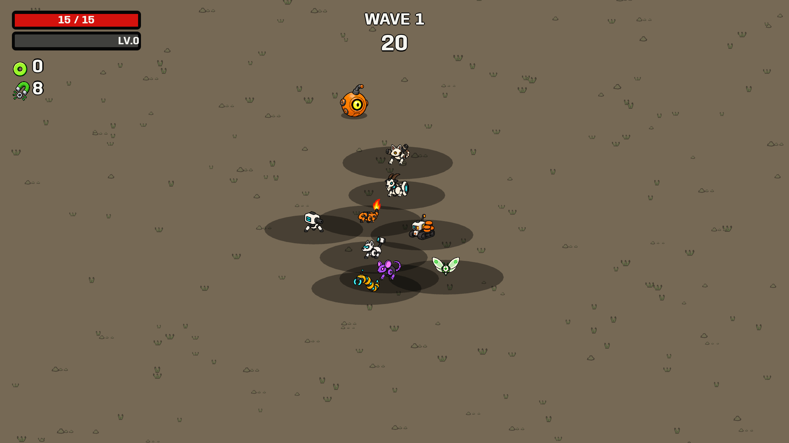
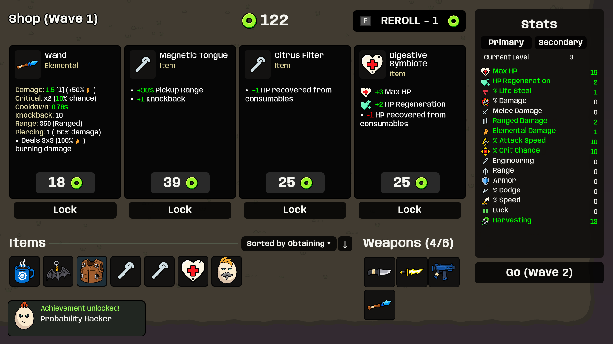

The new flatter icons are integrated. Compare the previous and approved item sheets.
Relaxed two-second gameplay-style spring bounce, gently swaying enemies, stationary title and buttons. Captures come from the built game; the achievement toast is produced by the test run.



The repeated high lead is replaced with sparse lower notes. Music begins only after the first weapon-selection Start.
300 tests passed; Windows build succeeded; all nine companion checks and the final support-motion/music checks passed. Staged tests do not replace a full manual survival run.
Playable executable (uncompressed folder) · Implementation and bug notes